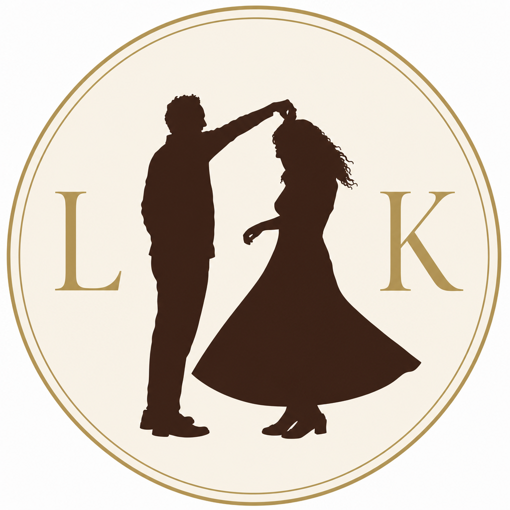

Nav bar mockup
Actual nav height (72px). Logo silhouette is 56px tall — same proportion as the site’s 72×72 brand slot — with L & K matching the drawing height.
 L&K
L&K
Large preview
Exactly 2× nav scale (112px silhouette). Same proportions as the mockup above — the colored panels show how the transparent logo reads on different surfaces.
L&K
Nav blue gradient
L&K
Ivory (page sections)
L&K
Warm cream (body)
L&K
White
Before & after
Original Option A (ivory circle, gold letters flanking) vs. the modified horizontal lockup at nav scale.
Original — Option A

Modified — transparent
L&K
Design specs
- Layout: [silhouette] L & K — horizontal, letters after the drawing
- Background: fully transparent (no ivory circle, no gold ring)
- Silhouette: maroon from Option A (
#6D2424) - Letters: Cormorant Garamond, weight 600, color
#3B261D— same as nav links - Nav size: 56px silhouette height inside the 72px nav bar
- Height: L & K cap height matches silhouette height
Let me know if you'd like any tweaks — spacing, letter size, or silhouette scale — before I add this to the website.